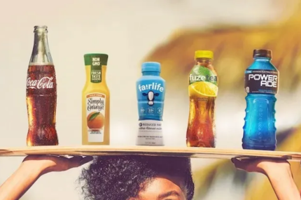
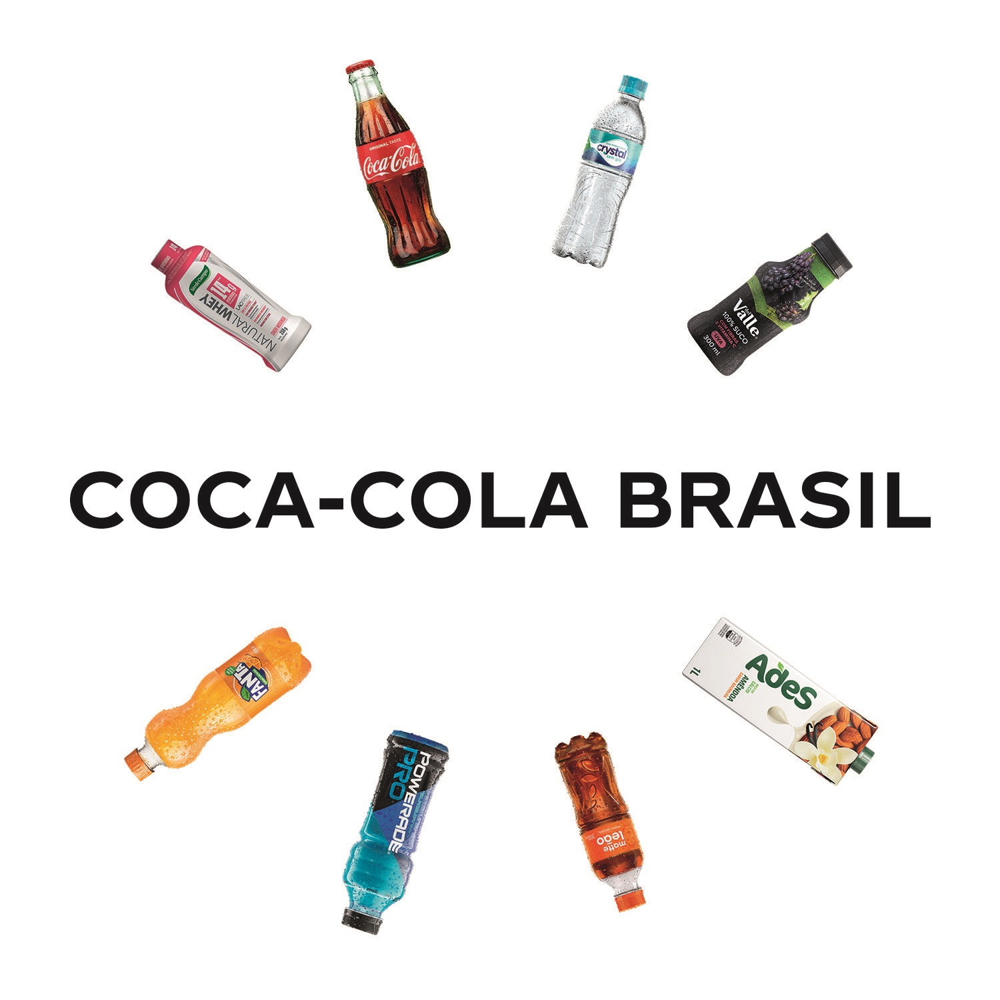

Sobre Nós

Em 8 de maio de 1886, o Dr. John Pemberton levou seu xarope aperfeiçoado para a Farmácia Jacobs no centro de Atlanta, onde foi servido o primeiro copo de Coca‑Cola. A partir dessa bebida icônica, evoluímos para uma empresa de bebidas completa. Mais de 2,2 bilhões de unidades de nossas bebidas são apreciadas em mais de 200 países e territórios todos os dias.
Estamos constantemente transformando nosso portfólio, em ações que vão desde a redução de açúcar adicionado em nossas bebidas até a introdução de novos produtos inovadores no mercado. Buscamos impactar positivamente a vida das pessoas, as comunidades e o planeta por meio da reposição de água, reciclagem de embalagens, práticas de fornecimento sustentável e redução de emissões de carbono em toda nossa cadeia de valor. Junto com nossos parceiros engarrafadores, empregamos mais de 700.000 pessoas, ajudando a trazer oportunidades econômica para comunidades locais em todo o mundo.
Nosso portfólio de bebidas se expandiu para mais de 200 marcas e milhares de bebidas ao redor do mundo, desde refrigerantes e águas até cafés e chás. Saiba mais sobre nossas marcas e nosso compromisso com produtos de qualidade.
Localização
Veja no mapa abaixo como nos encontrar
Nossas Marcas

- Coca-Cola
- Sprite
- FANTA
- Schweppes
- Cristal
- Guaraná Kuat
- Absolute Vodka Sprite
- Jack Daniel’s & Coca‑Cola
- Dell Vale
- Ades
- Leão
- Power ades